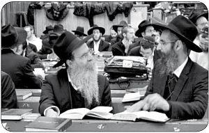

מקבלים פניו בשמחה
עכשיו, כשמלך המשיח כבר התגלה ומוכן בכל רגע לקחת את כולנו לבית המקדש - צריך רק שאנחנו נקבל אותו עלינו בשמחה, כמו עם המקבל עליו את מלכות המלך “כדי שיוכל לקיים את שליחותו בפועל ולהוציא את כל ישראל מהגלות!”.
עכשיו, כשמלך המשיח כבר התגלה ומוכן בכל רגע לקחת את כולנו לבית המקדש - צריך רק שאנחנו נקבל אותו עלינו בשמחה, כמו עם המקבל עליו את מלכות המלך “כדי שיוכל לקיים את שליחותו בפועל ולהוציא את כל ישראל מהגלות!”.

“ע”פ הודעת כ”ק מו”ח אדמו”ר נשיא דורנו, השליח היחיד שבדורנו, המשיח היחיד שבדורנו, שכבר סיימו את כל ענייני העבודה - הרי מובן שמתחיל להתקיים ה”שלח נא ביד תשלח” השליחות של כ”ק מו”ח אדמו”ר..”
במילים קצרות אלו, מגלה לנו הרבי שליט”א שאנו עומדים במצב ‘אל חזור’, הרבי שליט”א כבר קיבל את השליחות לגאול אותנו והוא יצא לדרך.
בנקודה זו, זקוקים לנו. עכשיו, כשמלך המשיח כבר התגלה ומוכן בכל רגע לקחת את כולנו לבית המקדש - צריך רק שאנחנו נקבל אותו עלינו בשמחה, כמו עם המקבל עליו את מלכות המלך “כדי שיוכל לקיים את שליחותו בפועל ולהוציא את כל ישראל מהגלות!”.
כמו כל דבר ביהדות ובחסידות, עניין זה חודר בכל שלושת לבושי החסיד - במחשבה, דיבור ומעשה. ובלשון הרב “כל הפרטים . . צריכים להיות חדורים בנקודה זו - כיצד זה מוליך לקבלת פני משיח צדקנו”.
במחשבה - ליבו של כל יהודי, משתוקק וצמא לחזות בפני מלך חיים. בנוסף לכך, הרבי שליט”א דורש שנתחיל לחיות משיח ולראות עולם של גאולה.
“אהה!” זועק יהודי על כל דבר ועניין שהוא רואה או שומע “הרי זה קשור לגאולה..”
בדיבור - “מלכויות הוא עניין הדיבור, כי בנוגע להכתרה הרי לא נוגע המחשבה, העיקר הוא עניין הביטול המתבטא בעניין הדיבור דווקא, שאומרים ‘יחי המלך’ וכיוצא בזה”, כך אומר הרבי בראש השנה תשל”ז.
עיקר עניינה של ‘קבלת המלכות’ הוא הביטול המתבטא בהכרזה החוזרת ונשנית ללא הפסק והשירה האדירה הפורצת מידי יום ביומו: יחי אדוננו מורנו ורבינו מלך המשיח לעולם ועד. כך מקבלים את המלכות. כך פועלים את ההתגלות.
במעשה - “כל שליח צריך להתכונן בעצמו ולהכין את כל היהודים במקומו ובעירו וכו’ לקבלת פני משיח צדקנו, ע”י שהוא מסביר את ענינו של משיח”, כותב הרבי שליט”א בשיחת חיי שרה תשנ”ב.
“להביא לימות המשיח” זו הדרישה. “לא רק “לרבות” שהוא (השליח) עומד ומחכה שמשיח יבוא ואז הוא יטול חלק בזה ויהנה מזה וכו’ אלא - “להביא”, הוא עושה כל התלוי בו כדי להביא ל”ימות המשיח”.
אתה חי משיח? אתה מכריז ‘יחי’? אתה לומד ענייני גאולה ומשיח? מה עם היהודי שלצידך?! מה עם “כל היהודים שבמקומו ובעירו”?!
חסיד, שליח,
מוכרחים להכין את העולם כולו לקבל את פניו של מלך המשיח!..
חייבים להגיע למעמד ומצב בו לא ישאר יהודי אחד בעולם כולו, שאינו יודע ומבין “את עניינו של משיח כמבואר בתורה שבכתב ובתורה שבעל פה”.
כבר הגיע הזמן, שלא רק אלפי חסידי חב”ד ושלוחי הרבי שליט”א, אלא כל אשר בשם ישראל יכונה ידע את האמת הברורה שיש נביא ומלך בישראל; שכ”ק אדמו”ר שליט”א הוא מלך המשיח; שצריך לקבל את מלכותו עלינו מתוך שמחה וביטול עצום ולהכריז מעצם הנשמה שלמעלה מכל השמות:
יחי אדוננו מורנו ורבינו מלך המשיח לעולם ועד
הנה משיח בא, נקבל פניו בשמחה.
מענדי - 770, בית משיח.
יום ראשון, כ”ג מרחשוון
ההכנות לכינוס השלוחים העולמי, מתגברים. במשך היום כבר נוחתים פה ראשוני השלוחים שמגיעים למשלח.
הערב, מתקיימת התוועדות בר מצווה לת’ מנחם מענדל הכהן כהן מספסופא. הבר מצווה היא סיבה טובה לשבת שוב להתוועד, עם המשפיעים השלוחים הרב יהודה פרידמן, הרב בצלאל קופצ’יק והרב יוסי לוי.
יום שני, כ”ד מרחשוון
בגלל המצב החמור בארץ הקודש, שמשחררים מחבלים רוצחים ה”י, התיישבו התמימים לפני סדר חסידות בוקר ללימוד ענייני גאולה ומשיח, כנאמר “השכם והערב עליהם והם כלים מאליהם”.
ההתוועדות הקבועה בפינה הצפונית-מזרחית, מארחת הלילה את שלוחי המלך, שמתוועדים יחד שעות ארוכות כשעשרות תמימים מקיפים את השולחן ושותים בצמא את דבריהם.
במהלך הערב, מתקינים ב770 את הנברשת השלישית, גם השניים הקודמות זוכות לשיפוץ קל - לפאר ולרומם את בית אלוקינו.
יום שלישי, כ”ה מרחשוון
ביום זה, לפני עשרים שנה, הכריז והודיע הרבי שליט”א על השליחות היחידה ועל ה’שער’ דרכו עולים כל עניני עבודת ה’ בתקופה זו: להכין את עצמנו וסביבתנו לקבל את פני הרבי שליט”א משיח צדקנו! יום זה מנוצל על ידי אנ”ש והתמימים חסידי חב”ד לחשבון נפש והחלטות טובות בביצוע השליחות היחידה.
במשך כל הזמן, ממשיכים השלוחים לנהור לבית חיינו. פשוט תענוג להסתכל על שליח שמגיע לכאן, כשהוא לא מפסיק לרגע לשהות ב-770 בין תפילה במניין של הרבי שליט”א ולימוד שיחה בצוותא עם שליח מקצה אחר של העולם, בין שיחת רעים עם ידידיו משכבר הימים להתוועדות חסידית סוחפת יחד עם התמימים של 770.
רואים ממש איך שמקור חיותו הגשמית והרוחנית של השליח - היא כאן ב-770 בית משיח - בביתו הנצחי ומקומו הקבוע של המשלח, ששם הוא יושב ממתין ומצפה לגאול את ישראל.
יום רביעי, כ”ו מרחשוון
משעות הבוקר, מתארגנים בבית חיינו לאירוע של הכנסת ארבעה ספרי תורה לבתי חב”ד ברחבי העולם. לצד ארון הקודש מוקמת בימה, בהמשך היום מוצאים הספסלים כולם מ770.
השיעור גאולה ומשיח שאחרי תפילת מנחה, נערך במקומו הקבוע, אך הפעם הוא על הבמה שנבנתה עבור התזמורת. רבים מהתמימים והשלוחים מצטרפים לשיעור ומתעוררים בעניין גילוי עצם הנשמה.
בתפילת מעריב, כבר נוכחים מאות אנשים, תמימים ושלוחים שהגיעו היום. הדבר ניכר בעוצמה האדירה שבשירת ה’יחי’ שקודם התפילה.
סיום כתיבת האותיות נערך בזאל של ‘חובבי תורה’ בנוכחות מאות שלוחים ואנ”ש. משם יצאו בתהלוכה של שמחה לעבר בית חיינו.
לאחר מעריב במניינו של הרבי שליט”א, פוצחת התזמורת בראשות הזמר החסידי ר’ אברהם פריד בניגון ההקפות, וארבעת ספרי התורה נכנסים לבית חיינו מלווים בקהל האלפים.
ריקודי השמחה ע”ד כבשמחת תורה מילאו את בית חיינו, אלפי השלוחים רוקדים במעגלים עם ספרי התורה ועשרות דגלי משיח בידיהם כשהתזמורת מקפיצה את הקהל לגבהים.
בחלק האחורי נערכת סעודת המצווה, ע”ד סעודת שלמה בשעתו.
במהלך המעמד ההיסטורי של הכנסת ארבעת ספרי התורה לבית חיינו בהשתתפות אלפי השלוחים מרחבי הארץ והעולם כולו, נשא המליונר התורם מר לאונרדו פרקש, נאום מרגש בפני הקהל הגדול, בו סיפר על הקשר המיוחד שלו עם הרבי ועל הידידות רבת השנים בינו לבין חסידי חב”ד ושלוחי הרבי מלך המשיח שליט”א.
הריקודים ממשיכים עוד שעה ארוכה, ומסתיימים בריקוד ‘יחי’ סוער.
לקראת הערב, מחולקת לשלוחים התוכניה המהודרת של ‘כינוס השלוחים העולמי’ המתקיים על ידי ה’מרכז לעניני חינוך’ שתחת נשיאות כ”ק אדמו”ר מלך המשיח שליט”א. הכינוס השנה, עומד בסימן “לתקן עולם במלכות ש-ד-י” כדברי הרבי שליט”א שזוהי השליחות היחידה. במהלך הכינוס ידונו השלוחים בהיבטים השונים של ביצוע השליחות ובהחדרתה בכל פרטי הפעילות במשך השנה כולה.
יום חמישי, כ”ז מרחשוון
בתפילת שחרית, כבר ניכר העומס האדיר בבית חיינו, שמלא מפה לפה בשלוחי המלך מכל רחבי תבל. כמו כן, בקריאת התורה נשמעים מאות ברכות הגומל של השלוחים מכל קצווי תבל..
בסיום התפילה, שוב נשמעים קולותיהם המתוקים של חיילי ‘צבאות ה’ - ‘משיחי’ המכריזים ‘יחי אדוננו..’ בקול רווי אמונה טהורה. אלה הם חיילי קעמפ ‘ילדי השלוחים’ שהחל היום את פעילותו, למשך ימי הכינוס.
היום מתחילה תוכנית “כינוס השלוחים העולמי”, כשהשלוחים מתאספים בבניין אש”ל - הכנסת אורחים, לסדרת סדנאות והרצאות, המתקיימות לאורך היום כולו, שיסייעו להם בעבודת השליחות. הסדנאות אמנם שונות ומגוונות, אך בכולם חודרת ועוברת בגלוי הנקודה והשליחות האחת והיחידה: להכין את העולם לקבלת פני הרבי משיח צדקנו!
הלילה מתקיים השיעור העיוני השבועי בענייני משיח וגאולה, השיעור נמסר על ידי שליח הרבי שליט”א להודו הרב שמשון שיחי’ גולדשטיין בדבריו החמים ובהסברים הנפלאים על שיחת חיי שרה תשנ”ב הוא מרתק את קהל אנ”ש התמימים והשלוחים במשך שעתיים ארוכות.
בהמשך הערב, נערכים התוועדויות ליל שישי. ביניהם ניתן לראות את הרב זלמן שיחי’ לנדא שמתוועד עד השעות הקטנות של הלילה.
יום שישי, יח”י מרחשוון
לאחר תפילת שחרית, התמימים והשלוחים יוצאים להפוך את עיר הבירה של נשיא הדור ולהכין את כל יהודי ניו יורק לקבלת פני הרבי שליט”א.
מספר שעות לפני שבת, מתקיימת בבית חיינו הכנסת ספר תורה מיוחדת בהשתתפות רבים מהשלוחים, שהצליחו לפנות מהזמן הצפוף של יום שישי ובין ההכנות לשבת הגיעו להשתתף בהכנסת ספר התורה הייחודית. ספר התורה הוכנס בבית חיינו - שם גם נערך מעמד כתיבת האותיות האחרונות - ומשם ימשיך לישיבת תומכי תמימים ביוהנסבורג, דרום אפריקה, בראשותו של הרב נועם וואגנער.
ליל שבת קודש
לקראת כניסת השבת, מתמלא 770 עד אפס מקום באלפי השלוחים הנוהרים לבית המשלח, בידיעה ברורה שזהו “מקומו הקבוע של נשיא הדור” עד ביאת גואל צדק, ששם יושב ממתין ומצפה לגאול את ישראל.
אלפי השלוחים המסתופפים ב770 הם העדות החזקה ביותר לאמונה המשותפת לכולם בלי יוצא מן הכלל: הרבי מלך המשיח חי וקיים כאן ב-770, ותיכף ומיד הוא מתגלה וגואל אותנו!
התמימים - חיילי בית דוד, משתדלים לקיים את הוראת הרבי “לצאת בהכרזה והודעה לכל השלוחים, שעבודת השליחות שלהם עכשיו מתבטאת בזה שיקבלו את פני משיח צדקנו” כמות אדירה של חומר רב ומגוון אודות עבודת השליחות, רואה אור לקראת שבת זו.
קונטרס ‘שלח נא ביד תשלח’ המכיל את שיחת ש”פ חיי שרה ה’תשנ”ב, קונטרס ‘יחי המלך’ המכיל שיחות בענייני משיח וגאולה, קובץ “צו השעה” מבית ‘ועד חיילי בית דוד’ המביא גם הוא אוצרות ופנינים מיוחדים בנושא, ועוד שלל קבצים, דפים ומודעות.
האמונה הטהורה והחיות העצומה, מתפרצת בשירה אדירה, אחרי ‘לכה דודי’: “יחי אדוננו מורנו ורבינו מלך המשיח לעולם ועד” אלפי שלוחים מכל העולם קופצים ורוקדים בשמחה עצומה מתוך אמונה וציפייה דרוכה להתגלות.
לאחר התפילה, פונים השלוחים לחדר האוכל שבבנין אש”ל, שם הם מתוועדים שעות ארוכות ומספרים סיפורי שליחות וממופתיו של המשלח.
שבת מברכים - יום התוועדות
“אמירת כל התהילים בהשכמה קודם התפילה” מתחילה בשעה 8:30 במניין של הרבי, שוב מתמלא 770 באלפי שלוחים ואנ”ש. תפילת שחרית מלווה בניגוני שמחה לרוב, כיאה לשבת המברכת את חודש הגאולה.
ברכת החודש מזכירה לנו שוב את ההתגלות המיוחלת: “הוא יגאל אותנו בקרוב ויקבץ נידחנו מארבע כנפות הארץ… ראש חודש כסלו, ביום הראשון וביום השני הבא עלינו לטובה..”
כנהוג, כשהספר תורה החדש - בו קראו בשבת זו - מוחזר לארון הקודש, הקהל שר במרץ את הניגון “שישו ושימחו בשמחת הגאולה, הנה הנה משיח בא”.
התוועדות השבת הקבועה עם הרבי מלך המשיח שליט”א, היא פתיחתו הרשמית של “כינוס השלוחים העולמי”. אלפי השלוחים ניצבים הכן ועומדים מוכנים לכניסתו של הרבי, הם מקדמים את פניו בשירת ‘יחי אדוננו’ אדירה המהדהדת בחלל המקדש במשך שעה ארוכה.
אלה הם הרגעים האישיים של כל שליח עם המשלח. הרגע בו הוא מרים את כוסית ה’לחיים’, מניף אותה אל מול מקומו הק’ “ומודיע: עשיתי את שליחותי, ועכשיו הגיע הזמן שאתה, כביכול, תעשה את שליחותך. .”.
במשך השעות הבאות מתקיימות התוועדויות רבות הנפתחות בכל פינה ב770, סביב השלוחים מכל רחבי תבל, השופעים סיפורים, אפיזודות, אמרות ומעל הכל - חיות, שמחה והתקשרות למשלח ולשליחות היחידה.
מוצאי שבת קודש
עם צאת השבת, מתחילים התמימים לעבוד בזריזות האפשרית, להכין את 770 לקראת הבאנקעט החגיגי והמפואר של “כינוס השלוחים העולמי” המתקיים כאן הלילה. בשעות אלו, הופך בית חיינו לאולם אירועים מפואר כשקירותיו ועמודיו מקושטים ומעוטרים בחן, כיאה למעמד הנכבד לכבוד שלוחי המלך המשיח, ברוב פאר והדר. (אודות הבאנקעט - ראה ידיעה נפרדת בגליון זה)
הבאנקעט מסתיים בריקודי ‘יחי אדוננו’ הנמשכים שעה ארוכה. בהמשך, התמימים מתיישבים להתוועדויות חסידיות לתוך הלילה, עם כמה מהשלוחים מרחבי העולם.